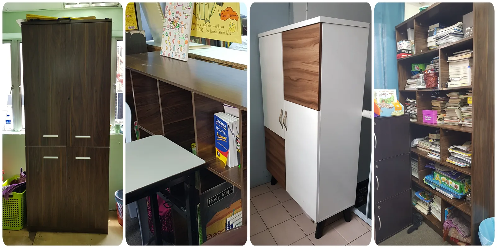
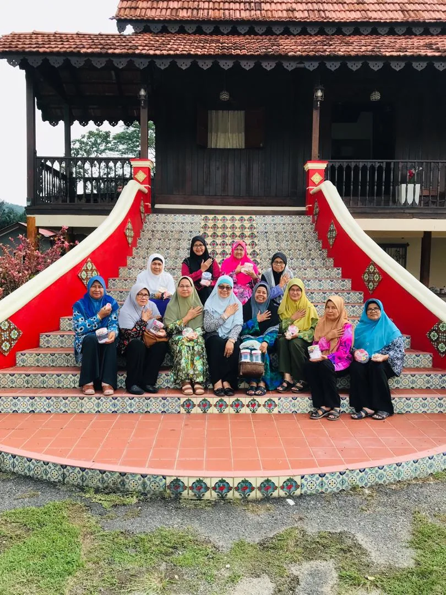
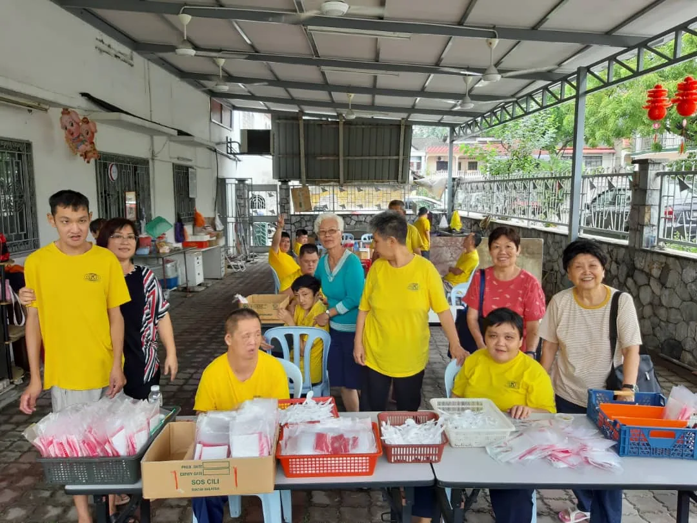
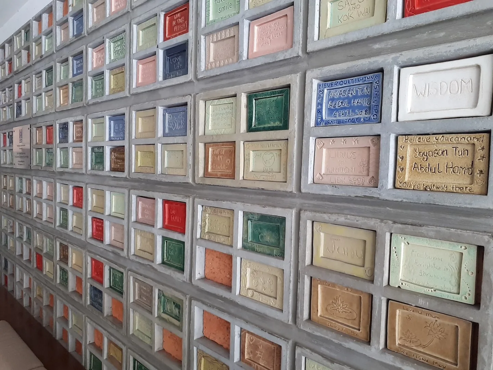

Practical
Laptops, books, household essentials, comfort items and direct support where they can make an immediate difference.
SMALL STEPS
Amal yang disampul dengan maruah.
THE PHILOSOPHY
The founding fathers of YTAH were mindful of a duty to help fellow human beings. Small Steps was initiated by Friends of the Yayasan as a way to translate that responsibility into practical assistance.
Its defining principle is restraint: photographs and publicity around donations are intentionally kept to a minimum in order to protect donor privacy and recipient dignity.
Laptops, books, household essentials, comfort items and direct support where they can make an immediate difference.
Assistance responds to real circumstances rather than forcing every act into a single programme template.
The work is not designed around publicity, donor visibility or beneficiary photography.




SELECTED EXAMPLES FROM THE PUBLIC RECORD
A laptop for an STPM student at PPR Desa Rejang.
Schoolbooks for children of Pertubuhan Kebajikan Anak Yatim & Asnaf Teratak Ummi in Gombak.
Blankets and soft toys for underprivileged children in Pudu, Kuala Lumpur.
Laptops and other essential household items presented at PPR Semarak.